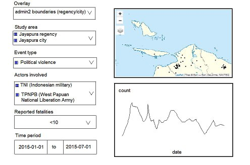
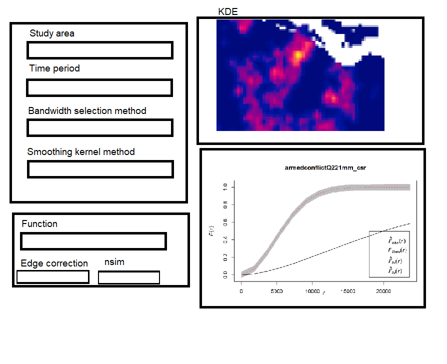

Project Proposal: Armed Conflict in Indonesia
1.0 Introduction
War. War never changes.
The Romans waged war to gather slaves and wealth. Spain built an empire from its lust for gold and territory. Hitler shaped a battered Germany into an economic superpower.
But war never changes.
Armed conflicts have significant impacts on human security, development, and regional stability. Understanding the spatial and temporal dynamics of these conflicts is critical for policymakers, peacebuilders, and human rights advocates. We aim to visualise conflict trends, identify hotspots, and uncover patterns in our analysis of armed conflict in Indonesia. In particular, the Papua region has been a focal point of prolonged unrest, with political, ethnic, and economic tensions leading to recurring violence. Papua consists of 6 Indonesian provinces: Central Papua, Highland Papua, Papua, South Papua, Southwest Papua, and West Papua.
The Papua conflict has been ongoing since 1962, between Indonesia and the OPM. By 2007, an estimated 100,000 to 300,000 Papuans have been killed by Indonesian forces, and countless more having experienced violence.
When Joko Widodo became Indonesia’s president in 2014, there was hope for a resolution to the crisis. He released a handful of Papuan political prisoners and vowed to address the 2014 Paniai human rights abuse case, relating to an incident where the Indonesian army fired on hundreds of Papuan protesters, killed four teenagers, and wounded more than a dozen others in highland Papua. A promise to open West Papua to foreign journalists was seen by many as another sign of Widodo’s goodwill.
However, the commitment to address the conflict fell apart in the waning days of his first administration.
Under Widodo’s second administration since 2019, Papuan grievances have intensified. Instead of the root causes of the conflict, the state has focused chiefly on development and infrastructure programmes, including the Trans Papua highway that’s under construction in some regencies in West Papua, a food estate, a special economic zone, strategic tourism areas and palm oil plantations.
The issues in Papua are of critical importance due to their significant humanitarian and socio-political implications. The frequent violence has stunted the region’s development, hindered economic growth, and caused long-term social fragmentation. However, despite the severity of the situation, Papua often remains underreported on a global scale. Understanding the drivers and geography of conflict in this region can pave the way for more effective peacebuilding. What makes this problem particularly interesting—and difficult to solve—is the intersection of spatial, political, and socioeconomic complexities. Armed conflict data for Papua is not only vast but also deeply interwoven with factors such as ethnic diversity and cultural practices.
This project thus aims to shed light on the conflict and inform intervention strategies, contributing to long-term peace and stability.
Project Objectives
- To map the spatial distribution of armed conflicts in Indonesia, with a focus on Papua, using ACLED (Armed Conflict Location & Event Data) data.
- To identify conflict hotspots and temporal trends, highlighting regions within Papua most affected by violence.
- To provide data-driven insights that can assist stakeholders in developing targeted peacebuilding initiatives or security interventions.
Project Features
Conflict Map: A geospatial visualisation of conflict events across Indonesia, with the emphasis on the Papua region. The map will include filters for conflict type, actor groups, and event severity.
Temporal Analysis: Track changes in conflict intensity and frequency over time, helping identify peak periods of violence or emerging trends.
Hotspot Identification: Spatial analytics to pinpoint regions that are consistently affected by armed conflic.
2. Lit Review
Sujarwoto (2017) used data from the 2008 Village Potential Census (Podes) and statistics on communal conflict across districts to show that communal conflicts exhibit clustering, and argued that this is a result of clustering of underlying determinants such as poverty and weak local government capacity.
Pierskalla and Sacks (2017) used data from Indonesia’s National Violence Monitoring System (NVMS) to examine the relationship between dimensions of government decentralization and different types of local violence in Indonesian districts during 2001 to 2010, and found that different decentralization measures have opposite effects on various types of local violence.
Although these studies produced useful insights on the factors that may contribute to higher rates of conflict events, they do not focus specifically on the unique context of the Papua conflict and rely on data that is over the decade old. Our application thus aims to allow enterprising users to partially fill this gap by studying the patterns of conflict in Papua after Joko Widodo became President of Indonesia in late 2014.
3. Approach
Our application will have the following features:
3.1 Exploratory Data Analysis
Users will be able to view an interactive point map of armed conflict events in the Indonesian provinces of Southwest Papua, West Papua, Central Papua, Papua, Highland Papua and South Papua, occurring from January 2015 to June 2024. The map will allow users to overlay administrative (province; regency and city) boundaries and to filter event points by:
Study areas (regencies and cities)
Event type
Actors involved
Number of reported fatalities
Time period (start date and end date)
Users will also be able to view an interactive graph of the aggregate number of armed conflict events over time. They will be also be able to view the time series data for their chosen:
Study areas (regencies and cities)
Event type
Actors involved
Number of reported fatalities
Time period (start date and end date)
3.2 Spatial Point Patterns Analysis: 1st and 2nd Order
Users will be able to derive kernel density estimation (KDE) layers for visualising the spatial intensity of armed conflict point events over a chosen study area, during a time period stipulated by them.
They will also be able to choose a:
Bandwidth selection method (bw.diggle, bw.CvL, bw.scott, bw.ppl, or adaptive bandwidth)
Smoothing kernel method (Gaussian, Epanechnikov, Quartic, or Disc)
Users will also be able to perform 2nd order spatial point patterns analysis on the armed conflict point events occurring within the chosen study area and time period, and conduct a Monte Carlo test of complete spatial randomness on the point process, using any of the following functions:
G-function
F-function
K-function
L-function
They will also be able to specify the edge correction to be applied and the number of simulations to be generated in the Monte Carlo test.
3.3 Spatiotemporal Point Patterns Analysis: 1st and 2nd Order
Users will be able to derive quarterly or monthly spatiotemporal kernel density estimation (STKDE) layers for armed conflict point events in their chosen study area, which will be displayed in a single animation.
Users will be able to compute and visualise the space-time inhomogeneous K-function for their chosen study area, which will allow them to assess the spatiotemporal aggregation or regularity of the point process.
4. Data
We will be using data from the following sources in our application, after appropriate processing.
| Data | Source | Description |
|---|---|---|
| Armed conflict events in Indonesia | ACLED | Data in csv format, providing location, date, and other attribute information on 6 types of armed conflict events in Indonesia occurring from 1 January 2015 to 30 June 2024. |
| Administrative boundaries of Indonesia | Humanitarian Data Exchange | Polygon feature data in ESRI shapefile format, providing information on Indonesia’s subnational administrative level 1 (provinsi/province) and level 2 (kota, kabupaten / city, regency) boundaries. |
5. R Packages
We will use the following R packages for our application.
shiny, a package that makes it easy to build interactive web apps straight from R.
tidyverse, a collection of R packages designed for data science, and which provides functions to import, transform, and visualise the data.
sf, to import, manage and process vector-based geospatial data in R.
tmap, which provides functions for plotting cartographic quality static point patterns maps or interactive maps.
spatstat, to perform 1st- and 2nd-order spatial point patterns analysis and derive kernel density estimation (KDE) layers.
sparr, which provides functions to estimate kernel-smoothed spatial and spatio-temporal densities and relative risk functions, and perform subsequent inference.
stpp, which provides statistical tools for analyzing the global and local second-order properties of spatio-temporal point processes, including estimators of the space-time inhomogeneous K-function and pair correlation function.
6. Storyboard
Exploratory Data Analysis Page

Spatial Point Patterns Analysis Page
